机构集体看空 vs 市场实际走势
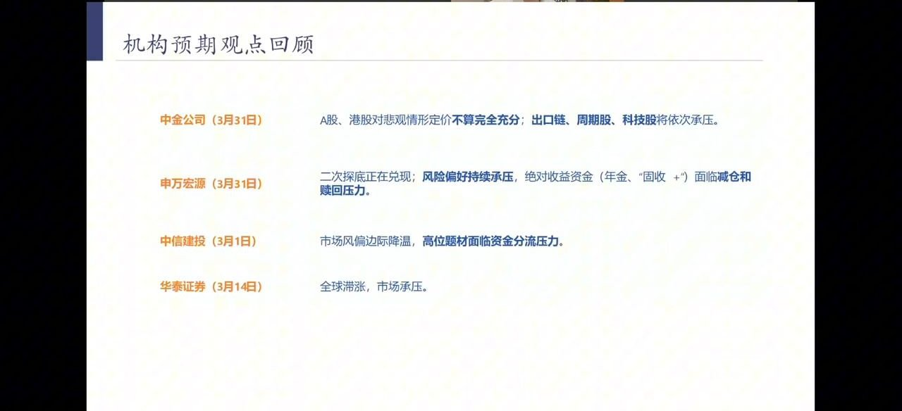
3月中东局势升温前后，头部券商密集发布悲观报告，成为本轮下跌的直接触发器：
- 中金公司（3月31日）：A股、港股对悲观情形定价"不算完全充分"；出口链、周期股、科技股将依次承压。
- 申万宏源（3月31日）：二次探底正在兑现；风险偏好持续承压，绝对收益资金（年金、"固收+"）面临减仓和赎回压力。
- 中信建投（3月1日）：市场风偏边际降温，高位题材面临资金分流压力。
- 华泰证券（3月14日）：全球滞涨，市场承压。
陈鹏的核心观察：这些悲观预测事后几乎全部落空。3月A股的下行并非基于经济基本面，而是机构言论共振引发的恐慌情绪自我实现——情绪推跌、又自我强化。
我们的前瞻：油价、产业与流动性
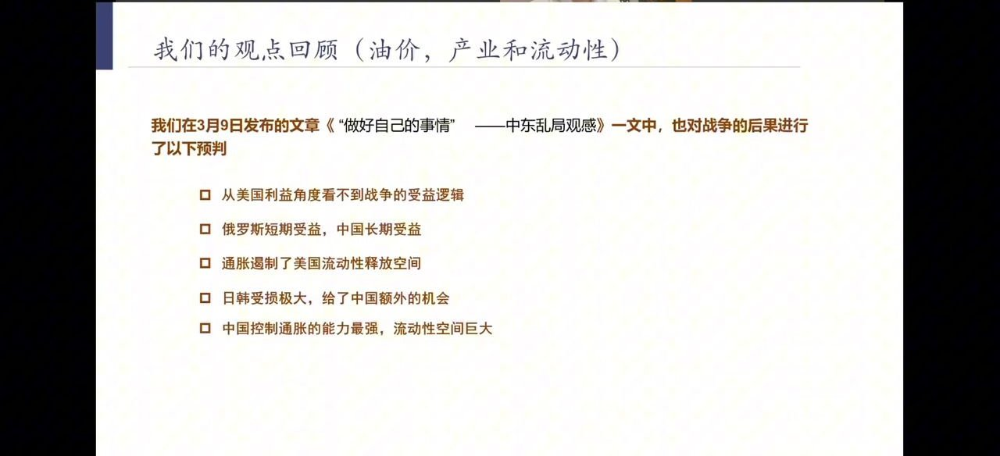
在3月9日发布的《"做好自己的事情"——中东乱局观感》中，团队对战局后果做了如下预判，事后验证度较高：
- 从美国利益角度看不到战争的受益逻辑
- 俄罗斯短期受益，中国长期受益
- 通胀遏制了美国流动性释放空间
- 日韩受损极大，给了中国额外的机会
- 中国控制通胀的能力最强，流动性空间巨大
关键逻辑：与中国工业产能重合度极高的日韩受冲击远大于中国，中国完整的新能源产业链价值将被全球重新认可。高油价反而推高美国通胀、压制其降息空间——这是美国难从冲突中受益的根源。
我们的前瞻：情绪、观点与展望
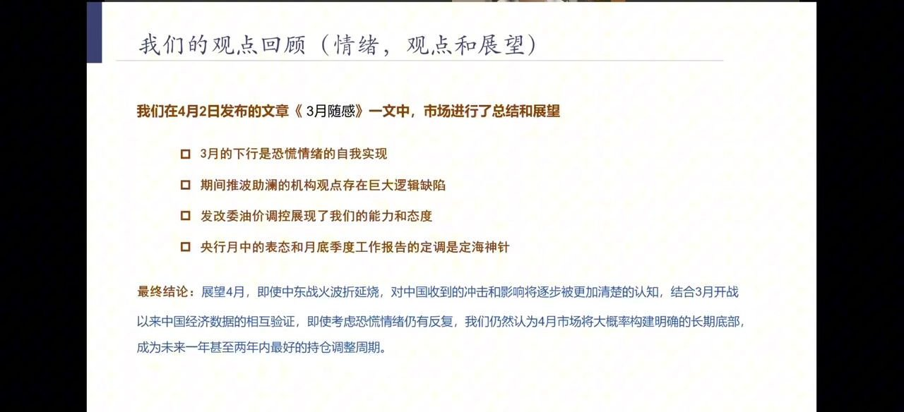
在4月2日发布的《3月随感》中，团队对市场做了总结：
- 3月的下行是恐慌情绪的自我实现
- 期间推波助澜的机构观点存在巨大逻辑缺陷
- 发改委油价调控展现了我们的能力和态度
- 央行月中的表态和月底季度工作报告的定调是"定海神针"
最终结论：展望4月，即使中东战火拖延，对中国的冲击将逐步被更清楚地认知。结合3月开战以来经济数据的相互验证，即使恐慌情绪仍有反复，4月市场大概率构建明确的长期底部，成为未来一年甚至两年内最好的持仓调整周期。
3月数据验证与4月走势
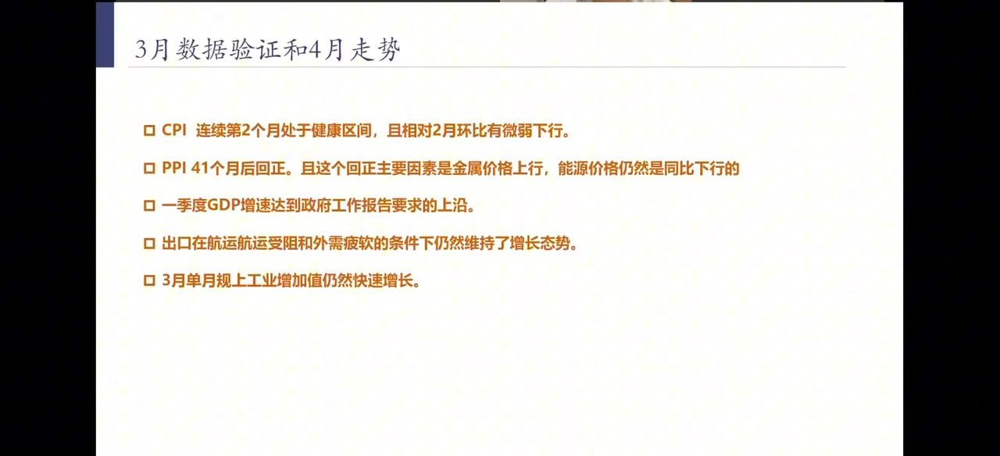
4月公布的3月经济数据，逐条印证了"利空被夸大"的判断：
- CPI：连续第2个月处于健康区间，相对2月环比有微弱下行——通胀温和，无需紧缩。
- PPI：41个月后回正。回正主因是金属价格上行，能源价格仍同比下行——工业品通缩结束。
- 一季度GDP增速：达到政府工作报告要求的上沿。
- 出口：在航运受阻、外需疲软的双重压力下仍维持增长。
- 3月单月规上工业增加值：仍然快速增长。
4月市场整体上行，唯一的短期调整来自4月底集中披露的差年报/季报——这是历年财报季的常规现象，而非趋势逆转。
2023年的看空浪潮：拜登"定时炸弹"
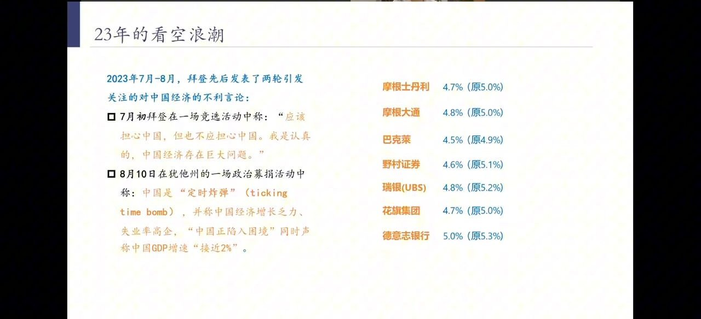
把时间拉长，这轮"利空"并非孤例。2023年7—8月，拜登先后发表两轮引发关注的对华不利言论：
- 7月初竞选活动称："应该担心中国，但也不应担心中国。我是认真的，中国经济存在巨大问题。"
- 8月10日在犹他州政治募捐活动中称中国是"定时炸弹"（ticking time bomb），称中国经济增长乏力、失业率高企，"正陷入困境"，GDP增速"接近2%"。
随后外资行集体下调中国GDP预测（原预测→下调后）：
- 摩根士丹利 4.7%（原5.0%）｜摩根大通 4.8%（原5.0%）
- 巴克莱 4.5%（原4.9%）｜野村证券 4.6%（原5.1%）
- 瑞银(UBS) 4.8%（原5.2%）｜花旗 4.7%（原5.0%）｜德意志银行 5.0%（原5.3%）
结果：资金撤离砸出A股低位后，中国产业升级加速，而这些悲观预测全部被证伪。
2023年经济背景：危机中的产业突破
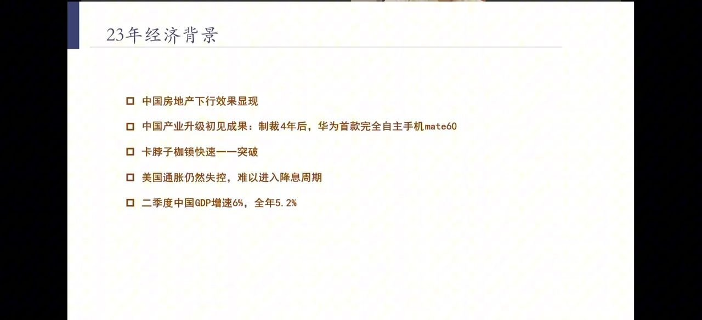
2023年看空声浪最盛之时，真实的经济图景是"旧引擎下行、新引擎崛起"并存：
- 中国房地产下行效果显现（旧引擎拖累）
- 产业升级初见成果：制裁4年后，华为发布首款完全自主手机Mate60
- "卡脖子"枷锁被快速一一突破（35项中绝大多数已突破）
- 美国通胀仍然失控，难以进入降息周期
- 二季度中国GDP增速6%，全年5.2%
更早的历史：克鲁格曼们的二十年打脸史
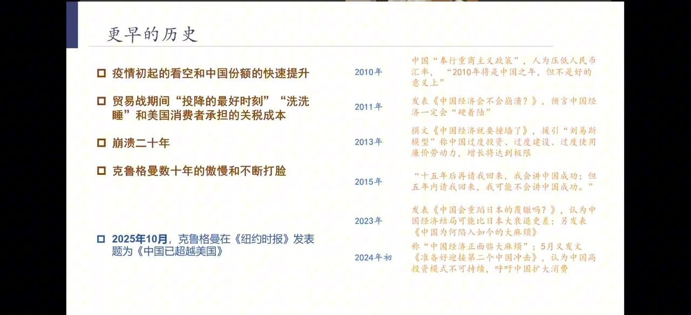
对中国经济的系统性看空，不是2023年才有，而是延续了二十多年：
- 2010年：中国"奉行重商主义政策"、人为压低汇率，"2010年将是中国之年，但不是好的意义上"。
- 2011年：发表《中国经济会不会崩溃？》，预言中国经济一定会"硬着陆"。
- 2013年：援引"刘易斯模型"称中国过度投资、过度建设、过度使用廉价劳动力，增长将达极限。
- 2015年："十五年后再请我回来，我会讲中国成功；但五年内请我回来，我可能不会讲中国成功。"
- 2023年：发表《中国会重蹈日本的覆辙吗？》，认为中国结局可能比日本大衰退更差；另发《中国为何陷入如今的大麻烦》。
- 2024年初：称"中国经济正面大麻烦"；5月发文《准备好迎接第二个中国冲击》，认为高投资模式不可持续。
2025年10月，克鲁格曼在《纽约时报》发表题为《中国已超越美国》——二十年唱空，最终公开认输。
为什么会这样（一）：西方视角的盲区
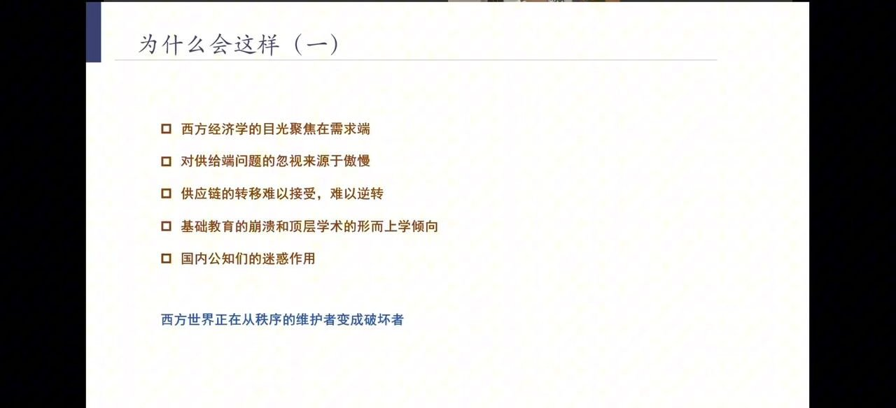
陈鹏分析西方为何反复误判中国，根源在于其分析框架的系统性偏差：
- 西方经济学的目光聚焦在需求端，默认自身供给端无短板。
- 对发展中国家供给端问题的忽视，来源于傲慢。
- 中国主导的供应链转移难以接受、也难以逆转。
- 基础教育的崩溃和顶层学术的形而上学倾向——再工业化在现有教育体系下不可能实现。
- 国内部分公知、自媒体的迷惑作用。
结论：西方世界正在从秩序的维护者变成破坏者。面对中国供应链主导全球的现实，其选择的是意识形态否定而非理性应对。
为什么会这样（二）：中国供给端的底色
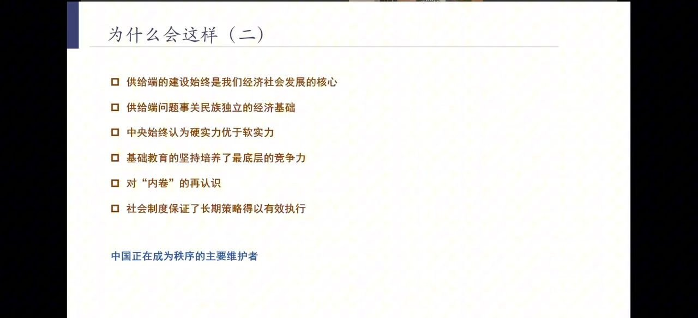
与西方视角相对，中国经济韧性的来源恰恰在供给端：
- 供给端的建设始终是经济社会发展的核心。
- 供给端问题事关民族独立的经济基础。
- 中央始终认为硬实力优于软实力。
- 基础教育的坚持培养了最底层的竞争力。
- 对"内卷"的再认识——这是工程师红利的另一面。
- 社会制度保证了长期策略得以有效执行（一带一路、产业政策的持续落地能力）。
世界银行最新报告已明确认可政府合理干预、产业政策的价值。中国正在成为秩序的主要维护者——过往一战、二战的秩序挑战者均以失败告终，中国作为现有秩序最大受益者，无需主动挑战。
百年变局的具象：上证综指 VS 标普500
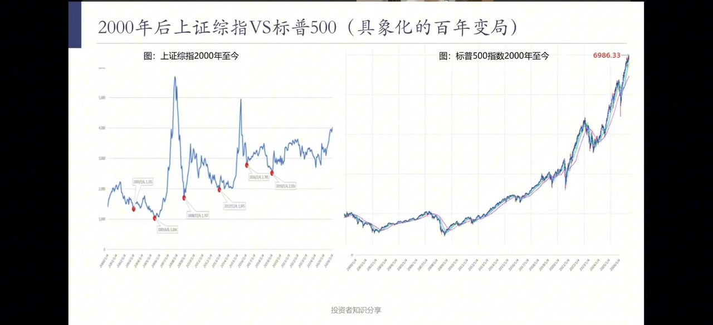
把2000年至今的两大指数并置，可以直观看到"百年变局"：标普500走出长牛（至6986点），而上证综指长期在3000点附近箱体震荡。
陈鹏判断：中国供给端建设已基本完成，市场将从过去跟随货币政策的3—4年周期波动，转向类似美股过去20年那样、由货币政策长期支撑的趋势性上行周期。当前A股正站在这个长周期切换的起点。
乘风破浪的三大动力来源
- ① 政策信号：国九条是未来十年资本市场的战略指引——转向投资端，要求上市公司规范融资、强化分红与回购，开启二级市场投资者的专属红利周期。
- ② 经济信号：稳定的增长击穿一切或真或假的"担忧"。
- ③ 宏观流动性：宽松的流动性护航已经写入"十五五"文件。
中证500：三条主线的交汇点
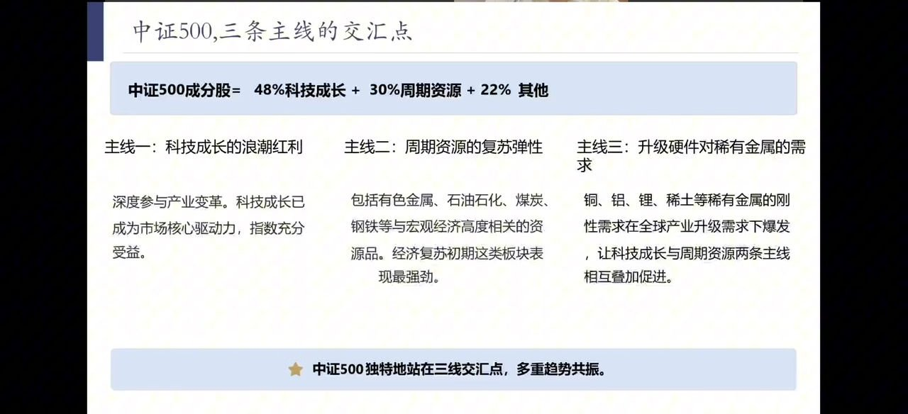
陈鹏给出的核心配置结论是中证500指数。其成分股结构恰好处在三条主线的交汇点：
中证500成分股 = 48%科技成长 + 30%周期资源 + 22%其他
- 主线一：科技成长的浪潮红利——深度参与产业变革，科技成长已成市场核心驱动力，指数充分受益。
- 主线二：周期资源的复苏弹性——有色金属、石油石化、煤炭、钢铁等与宏观经济高度相关的资源品，复苏初期弹性最强。
- 主线三：升级硬件对稀有金属的需求——铜、铝、锂、稀土等刚需在全球产业升级下爆发，使科技成长与周期资源两条主线相互叠加。
★ 中证500独特地站在三线交汇点，多重趋势共振。在流动性宽松周期下弹性最大，可关注中证500相关指数增强产品。
操作纪律：不要因短期波动频繁调仓、不要因5—6月短期行情做波段，至少以1年以上维度决策；但也切勿因信心强化而盲目满仓加杠杆——长趋势行情节奏往往偏慢。外资滞留香港的资金最终将北上，改善A股与港股流动性。